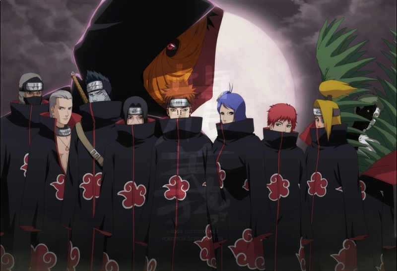

(暁; dosł. „Brzask” lub „Prześwit”) była grupą shinobich, która istniała poza standardowym systemem ukrytych wiosek. W ciągu kilku dekad, Akatsuki przyjmowało różne formy i było prowadzone przez różne osoby. Choć przez każdą iterację było uważane za organizację przestępczą, każda z nich zamierzała uczynić świat lepszym miejscem za pomocą własnych myśli i środków. Każda iteracja Akatsuki posiadała kilka kryjówek na całym świecie, będące niedostępne dla oka obcych ze względu na ich oddalenie lub rozmaitych środków bezpieczeństwa, które ich chroniły
| Członek | Narodowość |
|---|---|
| Tobi | Konohagakure |
| Pain | Amegakure |
| Itachi | Konohagakure |
| Kakuzu | Takigakure |
| Hidan | Yugakure |
| Sasori | Sunagakure |
| Kisame | Kirigakure |
| Zetsu | - |
| Deidara | Iwagakure |
| Konan | Kirigakure |
| Orochimaru | Konohagakure |